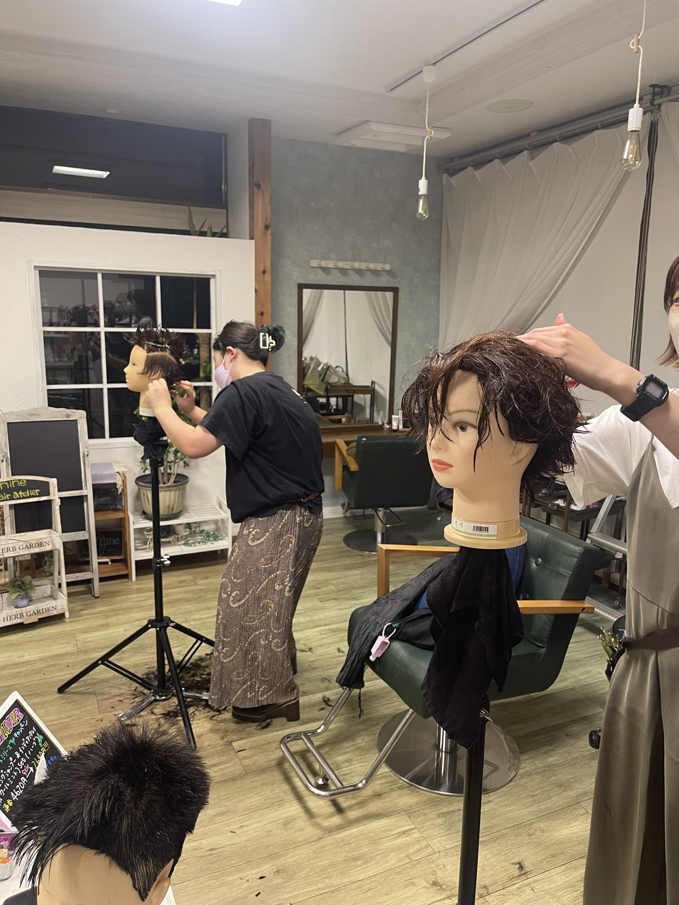
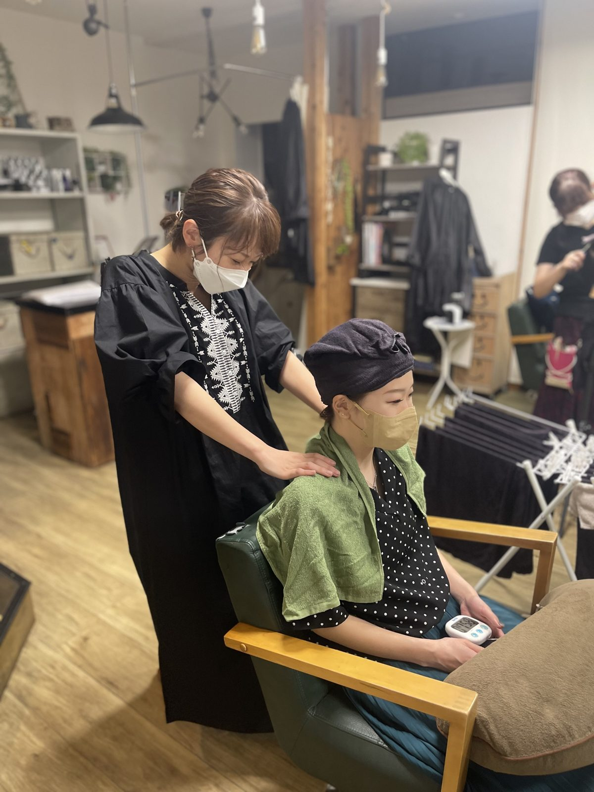

技術アップ↑↑
おはようございます。
アトリエ・ナインの菅野です。
ナインは毎週土曜日は技術トレーニングの日となっております。
技術アップはとても大切ですね。
ナインスタッフもお客様の綺麗のために全力でスキルアップをしております。



最近、スタイリストの佐藤も教育のバックアップをしてくれております。

みんな頑張ってすね〜。
教育の強化は今年掲げている目標の一つ。
みんななんでも器用に覚えてくれているので、さくっと教えるだけでOKなのは嬉しいですね。
最近始めた、自社の動画教材もスタッフからなかなかの評価。
僕らの時代は、講習会や本などで知識を広げていたのに。今は便利な時代になりました。
好きな時間に予習もできるので、スタッフも好きな時間に見れるのがいいですね。
これで、新入社員が入ってもマニュアルが動画になっているのでとても楽になりまし
た。
現代の力に感謝です。
ではまた。
株式会社 アトリエ・ナイン 代表 菅野
2015年9月、福島県福島市に《hair atelier nine》をオープン。
福島市で髪質改善、ヘッドスパサロンを展開しており、２０１９年１０月には待望の２店舗目をオープン。
オープンしてから３年目に法人化。オープン７年目に突入。サロンの労働環境改善のため社員の週休２日を実現。サロンワーク８時間で残業なし。スタッフに働きやす環境整備をもっとうに経営を心がけております。
福島市の美容室の求人をお探しの美容師さんぜひお話だけでもいかがでしょうか？？
求人に少しでも興味のある方はお気軽にお問い合わせください。
サロン見学や求人の概要の問合せ、相談など、なんでもお待ちしております。
LINE@:@jnp9523c
までお問い合わせください。